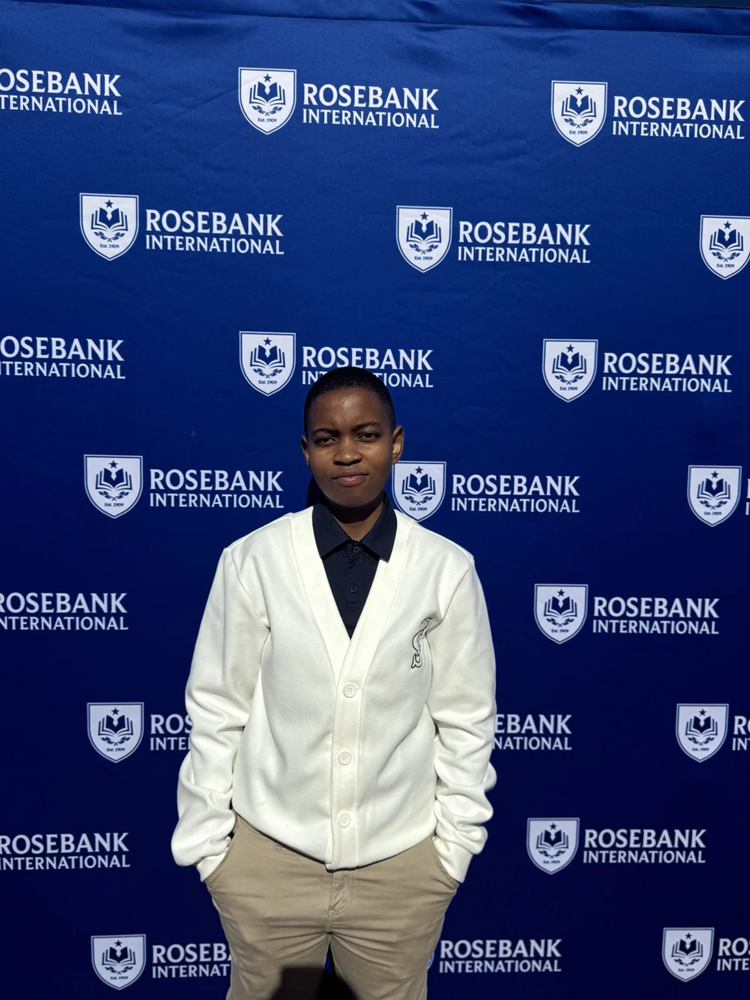

01
Programming
Java and C# programming, object-oriented design, console applications, Windows applications, arrays, sorting, loops, inheritance, exception handling, classes and unit testing.
PROG5121 · PROG6112 · PROG6221
My teaching practice focuses on helping students connect syntax and theory to the way software is actually designed, tested and maintained.
Java and C# programming, object-oriented design, console applications, Windows applications, arrays, sorting, loops, inheritance, exception handling, classes and unit testing.
PROG5121 · PROG6112 · PROG6221HTML5, CSS3, JavaScript, PHP, responsive interfaces, forms, server-side integration, MySQL, MariaDB and web application development.
WEDE6021ASP.NET Core, MVC, REST APIs, JSON, SQL Server, MySQL, CRUD operations, relational database modelling, ERDs, DTOs and database relationships.
PROG6212Test case design, functional testing, unit testing, integration testing, system testing, user acceptance testing, defect reporting, requirements traceability and testing documentation.
SQAT6322Knowledge Management, Software Engineering, Human Computer Interaction, Information Security, Software Project Management and related computing concepts.
KMAN6321 and related modulesPractical demonstrations make abstract development concepts visible. Students can see how a software system is built, ask questions and connect the implementation to a working result.

Demonstration-led learning
In this RaceDay classroom demonstration I explain project structure and the relationship between the user interface and application logic while showing the code in Visual Studio.
This approach carries through Java, C#, databases and testing: an explanation is followed by a practical example students can study and adapt.
Explore student workStructure activities around the concepts and skills students need to demonstrate in the module.
Use live coding, demonstrations, project guides and interactive applications to make learning active.
Connect ICE tasks, clear assessment guidance and individual feedback to students' next steps.
Teaching philosophy
I teach from the outcomes backwards. Students encounter concepts in manageable steps, see them applied to actual code, then complete an activity that gives them a chance to demonstrate understanding.
Across Java, C#, ASP.NET Core, databases and software quality, I combine live coding, discussion, practical tasks and individual support. Students are encouraged to explain their decisions rather than simply produce a working answer.
View learning and feedback →
I use worked examples, model implementations, assessment preparation, structured feedback and targeted academic support to move from individual concepts toward complete applications.
An ICE task with defined learning outcomes, anonymised student work and a feedback example shows how students apply the concepts taught in class.